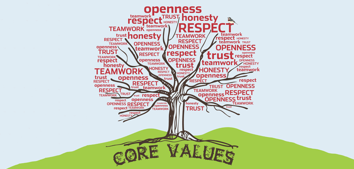

My Values
My name is Levi Hauraki I live in Gisborne and I have lived here my whole life. What I value is working hard, loyalty, trustworthiness, relience and empathy which have been something I have valued in others and in myself since I was young, though I would like to add to my character as I grow up more. I'm attending Dev Academy out of curiosity and a desire to learn more while also pushing myself out of my comfort zone.
